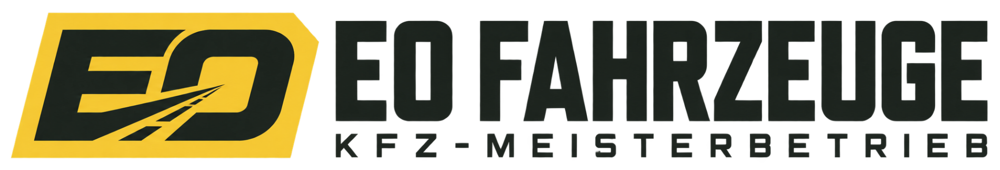
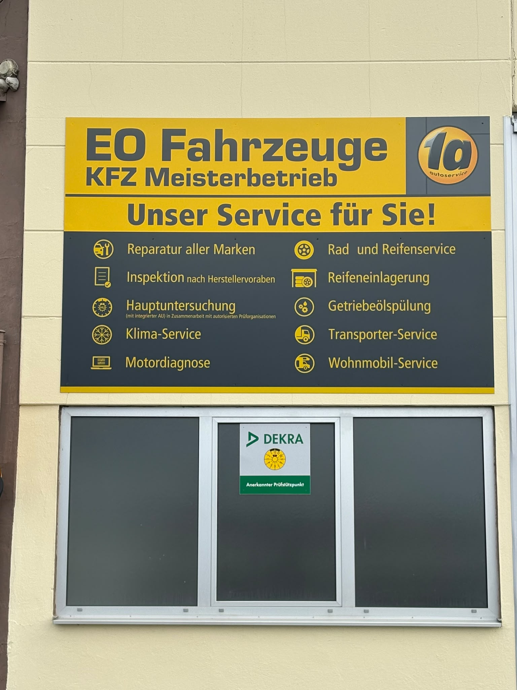
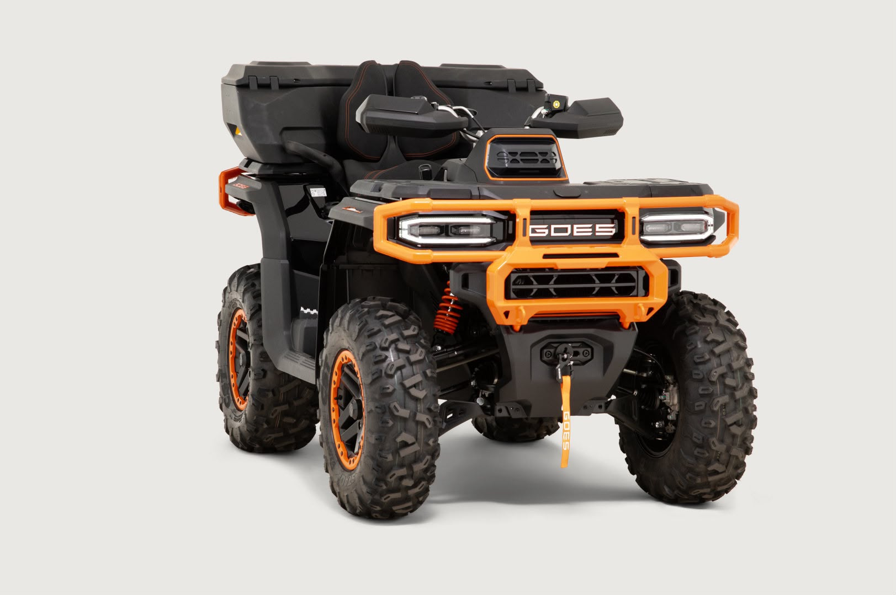

Reparatur & Wartung
Von der Inspektion über die Fehlersuche bis zur Instandsetzung. Wir kümmern uns um Verschleiß, technische Probleme und die regelmäßige Wartung Ihres Quads.

Wir finden die Ursache. Wir erklären die Lösung.
Und kümmern uns persönlich darum, dass Sie
wieder gut unterwegs sind.

VOM ERSTEN GESPRÄCH BIS ZUR REPARATUR
Was steht an? Welche Auffälligkeiten gibt es? Wir klären, was Ihr Fahrzeug braucht.
Gründliche Diagnose statt vorschnellem Teiletausch. Damit die Reparatur am richtigen Punkt ansetzt.
Verständliche Erklärungen und eine passende Lösung für Ihr Fahrzeug – persönlich mit Ihnen besprochen.
DIE WERKSTATT EHRLICHES HANDWERK
Ihre KFZ-Meisterwerkstatt in Calw. Für Wartung, Reparatur und die Überzeugung, dass guter Service mit einer gründlichen Diagnose beginnt.
Wir verbinden klassisches KFZ-Handwerk mit modernem, digitalem Service und über 20 Jahren Erfahrung. Ob PKW, LKW, Transporter, Wohnmobil, Quad oder Zweirad: Bei uns bekommt Ihr Fahrzeug die passende Betreuung.
Wir schrauben aus Leidenschaft. Wenn eine Fehlersuche länger dauert, bleiben wir dran, bis die Ursache gefunden und eine sinnvolle Lösung erarbeitet ist. Verständlich erklärt und persönlich mit Ihnen besprochen.
UNSERE WERKSTATTLEISTUNGEN
Vom täglichen Weg zur Arbeit bis zur großen Reise.
Wir kümmern uns um Ihr Fahrzeug –
markenübergreifend und mit Sachverstand.
QUAD & ATV · VERKAUF & WERKSTATTSERVICE
Für die nächste Tour, den Arbeitsalltag oder einen besonderen Einsatzzweck: Bei EO Fahrzeuge erhalten Sie Quad-Beratung, Verkauf und Werkstattservice aus einer Hand.
Als GOES Vertragshändler begleiten wir Sie bei der Fahrzeugwahl. Wartung und Reparaturen übernehmen wir auch für Quads und ATVs anderer Marken.
Von der Inspektion über die Fehlersuche bis zur Instandsetzung. Wir kümmern uns um Verschleiß, technische Probleme und die regelmäßige Wartung Ihres Quads.
Was braucht Ihr Quad für Touren, Gelände oder Arbeit? Wir beraten Sie zu Zubehör, das zu Ihrem Fahrzeug und seinem Einsatzzweck passt.
GOES Quads und ATVs mit persönlicher Beratung. Gemeinsam klären wir, welche Anforderungen Ihr neues Fahrzeug erfüllen soll und welche Ausführung dazu passt.
Sie möchten Ihr Quad finanzieren? Sprechen Sie uns an. Wir besprechen mit Ihnen die verfügbaren Möglichkeiten und die jeweiligen Konditionen.
Vom Zubehör bis zum Umbau für einen speziellen Einsatz, zum Beispiel als Feuerwehrfahrzeug. Wir besprechen Anforderungen und prüfen die passende Umsetzung.
Erleben Sie, wie sich Ihr Wunschfahrzeug fährt. Kontaktieren Sie uns, um die Möglichkeiten und einen passenden Termin für eine Probefahrt abzustimmen.
GOES QUADS & ATVS
Freizeit, Touren oder anspruchsvolle Aufgaben: Entdecken Sie die GOES Modellwelt. Wir beraten Sie zu Fahrzeugwahl, Ausstattung und Finanzierungsmöglichkeiten.
GOES Modelle entdecken
Abbildungen können Sonderausstattung zeigen. Modelle, Ausstattung und Verfügbarkeit erfahren Sie bei uns oder direkt beim Hersteller.
Verkauf, Zubehör, Umbau oder Probefahrt – lassen Sie uns über Ihren Einsatz sprechen.
KONTAKT & ÖFFNUNGSZEITEN
Eine Reparatur, die nächste Inspektion oder Ihr erstes Quad?
Erzählen Sie uns, was Sie bewegt.
Montag bis Freitag 08:00–17:00 Uhr